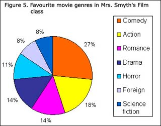
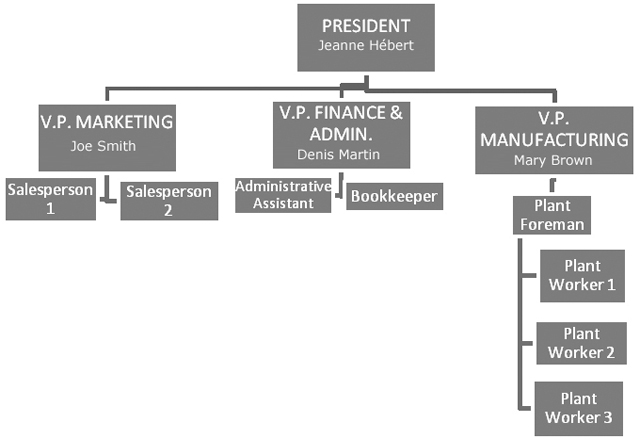

Images - Optimal Content Examples
Table Of Contents
Introduction
An image is a static two dimensional visual artifact that is a type of non-text content classified as decorative, simple, complex, or an image of text.
Decorative Images
Decorative images are images serving only an aesthetic purpose, providing no information, and having no functionality. These images are intended to be ignored by assistive technologies (such as screen readers).
Examples include: Borders, lines, backgrounds, icons, clip art in most contexts, and photos in some contexts.
Example

Simple Images
Simple images are images where a short text description (140 characters or less) can serve the same purpose and present the same information as the image.
Examples include: Photos in most contexts.
Example

Complex Images
Complex images are images requiring a long text description because a short description (140 characters or less) cannot serve the same purpose and present the same information as the image. In this case, the image likely contains relationships or data that require explanation.
Examples include: Diagrams, charts, and graphs.
Examples

Image Of Text
Images of text are images where text has been rendered directly within an image and does not include:
A particular presentation of text that is essential to the information being conveyed (such as logos and marketing material).
Text that can be visually customized by the user.
Text that is part of a picture that contains significant other visual content (such as photographs, charts, and graphs).
Examples include: Headings within images, image buttons, user control labels rendered entirely as images.
Example

Coding Requirements
The following summarizes selected techniques from the Web Content Accessibility Guidelines (WCAG) 2.0 for satisfying the most common applicable success criteria related to this topic. Additional WCAG 2.0 success criteria, techniques, and failures not listed here may also be applicable depending on the content.
1. Text Description
Related to Success Criteria:
Decorative Images
Use an empty alt attribute on a decorative image. Do not omit the alt attribute.
For example, <img alt="">.
Source: WCAG 2.0, Technique H67
Simple Images
Provide a short text description in the alt attribute of a simple image.
For example, <img alt="(short text description)">.
Source: WCAG 2.0, Technique H37
Complex Images
Provide all of these items for a complex image:
A long text description of the image somewhere in the text of the same page or another page. The long description must include all information and relationships conveyed in the image.
-
A short text summary in the
altattribute of the image. -
Associate the image with its long text description, using either:
-
A link immediately following the image to the long text description. For example,
<img alt="(short text summary)"> <a href="#desc">Text description of image</a>; or A description of the location of the long text description in the short text summary. For example,
<img alt="(short text summary. description follows)"> Long text description.
-
Source: WCAG 2.0, Technique G73 and WCAG 2.0, Technique G74
2. Images Of Text
Related to Success Criteria:
Do not use images of text. To customize visual presentation of text, use CSS.
Source: WCAG 2.0, Technique C22
3. Animated Images
Animated images are considered the same as video-only content and the requirements for video-only content apply.
Content Examples
1. Decorative Images
 News
News
Source Code
<h4><img src="img-news-nouvelles.gif" width="40"
height="35" alt="">
News</h4>
<img src="img-lin.gif" width="200" height="12"
alt="">To followSource Code
<img src="img-clr.png"
width="16" height="16" alt="">
<a href="#">Pick A Colour</a> An image with no relationship to other content can be deemed decorative because it serves only an aesthetic purpose, provides no information, and has no functionality.
An image with no relationship to other content can be deemed decorative because it serves only an aesthetic purpose, provides no information, and has no functionality.
Source Code
<p><img src="images/img-decor-photo.jpg" width="125" height="120" alt=""
class="float-left">An image with no relationship to other content
can be deemed decorative because it serves only an aesthetic purpose, provides
no information, and has no functionality.</p>2. Simple Images
The image of the hand writing with a pen may also be used in a non-decorative context as a simple image. In this case, it is being referenced directly and is related to the context of this paragraph.
Source Code
<p><img src="images/img-decor-photo.jpg" width="125" height="120"
alt="Hand writing with pen" class="float-left">The image of the hand writing
with a pen may also be used in a non-decorative context as a simple image. In this case, it is
being referenced directly and is related to the context of this paragraph.
Caption: The RCMP musical ride performing at the Sunset Ceremonies in Ottawa
Source Code
<p><img src="img-spl.jpg"
alt="The RCMP musical ride
performing" /></p>
<p class="margin-bottom-none">
<strong>Caption:</strong> The
RCMP musical ride performing
at the Sunset Ceremonies in
Ottawa</p
Source Code
<p><img src="img-spl.jpg"
alt="The RCMP musical ride
performing" /></p>To follow
Source Code
<p><img
src="img-spl-dog-chien.jpg"
alt="Two puppies" />
</p>3. Complex Images

| Genre | Percentage |
|---|---|
| Comedy | 27% |
| Action | 18% |
| Romance | 14% |
| Drama | 14% |
| Horror | 11% |
| Foreign | 8% |
| Science fiction | 8% |
Source Code
<div class="span-3 margin-bottom-none">
<p><img src="images/img-pie-eng.jpg" width="320" height="251"
alt="Pie chart of favourite movie genres in Mrs. Smyth's Film class.
Data table follows."></p>
</div>
<div class="span-2 margin-bottom-none">
<table>
<caption>Figure 5. Favourite movie genres in Mrs. Smyth's
Film class</caption>
<tr>
<th>Genre</th>
<th>Percentage</th>
</tr>
<tr>
<td>Comedy</td>
<td>27%</td>
</tr>
<tr>
<td>Action</td>
<td>18%</td>
</tr>
<tr>
<td>Romance</td>
<td>14%</td>
</tr>
<tr>
<td>Drama</td>
<td>14%</td>
</tr>
<tr>
<td>Horror</td>
<td>11%</td>
</tr>
<tr>
<td>Foreign</td>
<td>8%</td>
</tr>
<tr>
<td>Science fiction</td>
<td>8%</td>
</tr>
</table>
</div>
Source Code
<p><img src="images/img-org-eng.jpg" id="org" class="margin-top-medium"
alt="Example organizational chart. Description follows."></p><p class="align-center">
<a href="img-org-desc-eng.html">Text Description Of Image</a></p>Web Accessibility Considerations
Cognitive Impairments
Include supporting images, where possible, in order to accommodate visual comprehension deficits. For example, a Web page that outlines a specific mainframe screen must be textually described for visually impaired users. The addition of screen shot images adds value for users with visual comprehension deficits, like dyslexia. Furthermore, the combination of text and imagery adds value to all users, as some people are textual learners and others are visual learners.
Mobility, Dexterity and Coordination Impairments
If the image is selectable (for example, a thumbnail), make sure the size of the image is large enough to accommodate users with dexterity issues.
Visual Impairments
-
According to the Adaptive Technology Program,
alttext used in non-decorative images should help to convey the mood or experience of the site to screen reader users.
Related Links
Web Content Accessibility Guidelines (WCAG) 2.0 Success Criteria
Web Content Accessibility Guidelines (WCAG) 2.0 Sufficient Techniques
- Decorative Images: H67: Using null alt text and no title attribute on img elements for images that AT should ignore
- Simple Images: H37: Using alt attributes on img elements
- Complex Images: G73: Providing a long description in another location with a link to it that is immediately adjacent to the non-text content and G74: Providing a long description in text near the non-text content, with a reference to the location of the long description in the short description
- Images Of Text: C22: Using CSS to control visual presentation of text
- Date modified: